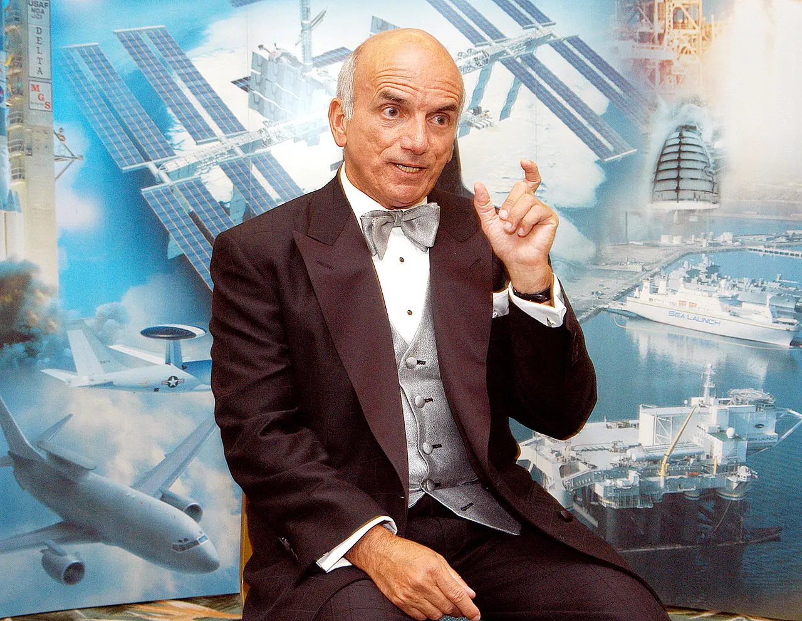
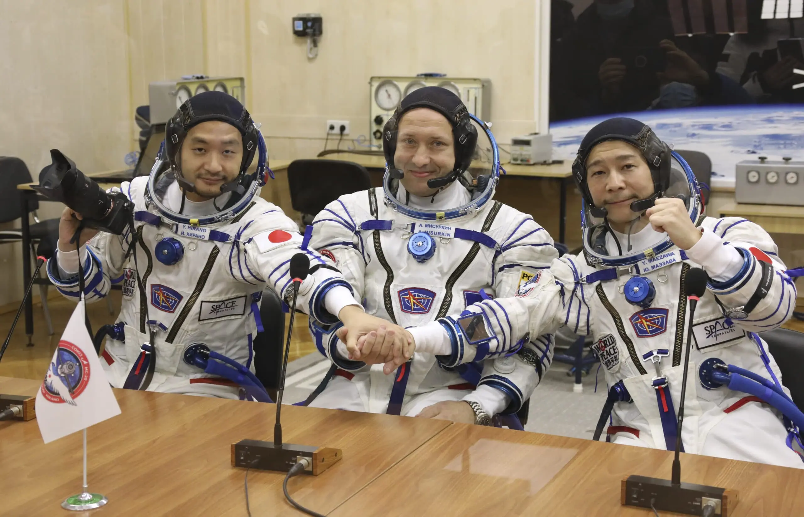

Россия стала пионером космического туризма, хотя сама идея родилась не от хорошей жизни. В 1990-е годы, когда финансирование отрасли сократилось в разы, появилась необходимость искать дополнительные источники дохода. Было принято решение сократить экипаж на станции «Мир», освободив место для богатых искателей приключений, но реализовать задумку удалось уже на Международной космической станции.
Первые шаги были сделаны ещё в начале 1990-х: японец Тоёхиро Акияма и британка Хелен Шармен летали на «Союзах» на станцию «Мир». Однако официальной точкой отсчёта считается 28 апреля 2001 года, когда корабль «Союз ТМ-32» доставил на МКС первого космического туриста — американского миллионера Денниса Тито. За шестидневное пребывание на орбите он заплатил 20 миллионов долларов. «Я побывал в раю», — сказал Тито после возвращения, а мировые СМИ запустили термин «космический туризм».
За ним последовали другие: южноафриканец Марк Шаттлворт (2002), американцы Грегори Олсен (2005) и Ануше Ансари (2006), ставшая первой женщиной-туристом, венгерско-американский программист Чарльз Симони, слетавший дважды (2007 и 2009), и шестой турист — канадец Ги Лалиберте (2009). После этого наступила пауза: программа Space Shuttle завершилась, и все места на «Союзах» были заняты доставкой профессиональных экипажей.

В 2021 году Россия вернулась к практике коммерческих полётов. На МКС отправились японский миллиардер Юсаку Маэдзава и его оператор Йодзо Хирано. В том же году состоялся уникальный проект — съёмки первого художественного фильма в космосе «Вызов» с актрисой Юлией Пересильд и режиссёром Климом Шипенко на борту.
Тогда же, в июле 2021 года, свой первый полёт совершил и Ричард Брэнсон, основатель Virgin Galactic. Вот как он обратился к следующему поколению прямо из невесомости:
Когда-то я был ребенком с мечтой, глядящим на звезды. Теперь я взрослый человек в космическом корабле вместе с другими замечательными взрослыми, и мы смотрим вниз на нашу прекрасную, прекрасную Землю. Следующему поколению мечтателей: если мы смогли это сделать, просто представьте, что можете сделать вы.
На 2025 год с космодрома Байконур запланирован новый туристический полёт продолжительностью 10 дней, стоимость которого оценивается в 50–80 миллионов долларов.
Помимо туризма, существует и более широкое понятие — коммерческий космос. Это продажа данных дистанционного зондирования Земли, услуги спутниковой связи и навигации, запуски иностранных спутников российскими ракетами. Именно коммерческие запуски «Протонов» и «Союзов» помогли российской космонавтике выжить в трудные 1990-е и 2000-е.
У России есть уникальное преимущество — легендарная надёжность «Союзов». Как отмечают эксперты, для развития туризма не нужно строить новые носители, достаточно использовать готовую инфраструктуру, а подготовку туристов можно было бы отдать частным компаниям. Однако остаётся и проблема цены: если у SpaceX полёт оценивается в 20–30 миллионов долларов, то Роскосмос оперирует суммами 50–70 миллионов, что снижает конкурентоспособность.
Несмотря на все сложности, Россия остаётся единственной страной, регулярно отправляющей непрофессионалов на орбиту. И хотя лидерство в этой сфере постепенно переходит к частным компаниям Илона Маска и Джеффа Безоса, именно наша страна открыла эру космического туризма ровно через 40 лет после полёта Гагарина.